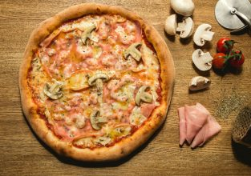

History of pizza

The history of pizza begins in antiquity, when various ancient cultures produced basic flatbreads with several toppings.
A precursor of pizza was probably the focaccia, a flat bread known to the Romans as panis focacius, to which toppings were then added. Modern pizza evolved from similar flatbread dishes in Naples, Italy, in the 18th or early 19th century.
The word pizza was first documented in A.D. 997 in Gaeta and successively in different parts of Central and Southern Italy. Pizza was mainly eaten in Italy and by emigrants from there. This changed after World War II when Allied troops
stationed in Italy came to enjoy pizza along with other Italian foods.

In Sardinia, French and Italian archaeologists have found bread baked over 7,000 years ago. According to Philippe Marinval, the local islanders leavened this bread.[4] Foods similar to pizza have been made since antiquity. Records of people
adding other ingredients to bread to make it more flavorful can be found throughout ancient history.
In the 6th century BC, Persian soldiers serving under Darius the Great baked flatbreads with cheese and dates on top of their battle shields.[5][6]
In Ancient Greece, citizens made a flat bread called plakous (πλακοῦς, gen. πλακοῦντος—plakountos)[7] which was flavored with toppings like herbs, onion, cheese and garlic.[8]
An early reference to a pizza-like food occurs in the Aeneid (ca. 19 BC), when Celaeno, the Harpy queen, foretells that the Trojans would not find peace until they are forced by hunger to eat their tables (Book III). In Book VII, Aeneas and his
men are served a meal that includes round cakes (like pita bread) topped with cooked vegetables. When they eat the bread, they realize that these are the "tables" prophesied by Celaeno.[9]
Some commentators have suggested that the origins of modern pizza can be traced to pizzarelle, which were kosher for Passover cookies eaten by Roman Jews after returning from the synagogue on that holiday, though some also trace its origins to
other Italian paschal breads.[10] Abba Eban writes "some scholars think [pizza] was first made more than 2000 years ago when Roman soldiers added cheese and olive oil to matzah".[11][better source needed]
Other examples of flatbreads that survive to this day from the ancient Mediterranean world are focaccia (which may date back as far as the ancient Etruscans); Manakish in Levant, coca (which has sweet and savory varieties) from Catalonia,
Valencia and the Balearic Islands; the Greek Pita; Lepinja in the Balkans; or Piadina in the Romagna part of Emilia-Romagna in Italy.[12]
Foods similar to flatbreads in other parts of the world include Chinese bing (a wheat flour-based Chinese food with a flattened or disk-like shape); the Indian paratha (in which fat is incorporated); the Central and South Asian naan (leavened)
and roti (unleavened); the Sardinian carasau, spianata, guttiau, pistoccu; and Finnish rieska. Also worth noting is that throughout Europe there are many similar pies based on the idea of covering flat pastry with cheese, meat, vegetables and
seasoning such as the Alsatian flammkuchen, German zwiebelkuchen, and French quiche.
In 16th-century Naples, a galette flatbread was referred to as a pizza. Known as the dish for poor people, it was sold in the street and was not considered a kitchen recipe for a long time.[13] This was later replaced by oil, tomatoes (after
Europeans came into contact with the Americas) or fish. In 1843, Alexandre Dumas described the diversity of pizza toppings.[14] An often recounted story holds that on June 11, 1889, to honour the Queen consort of Italy, Margherita of Savoy, the
Neapolitan pizzamaker Raffaele Esposito created the "Pizza Margherita", a pizza garnished with tomatoes, mozzarella, and basil, to represent the national colours of Italy as on the Flag of Italy.[15][16][17]
Pizza evolved into a type of bread and tomato dish, often served with cheese. However, until the late 19th or early 20th century, the dish was sweet, not savory, and earlier versions which were savory more resembled the flat breads now known as
schiacciata.[18] Pellegrino Artusi's classic early-twentieth-century cookbook, La Scienza in cucina e l'Arte di mangiar bene gives three recipes for pizza, all of which are sweet.[19] After the feedback of some readers, Artusi added a typed sheet
in the 1911 edition (discovered by food historian Alberto Capatti), bound with the volume, with the recipe of "pizza alla napoletana": mozzarella, tomatoes, anchovies and mushrooms.[20]
However, by 1927, Ada Boni's first edition of il talismano della felicità (a well-known Italian cookbook) includes a recipe using tomatoes and mozzarella.[21]